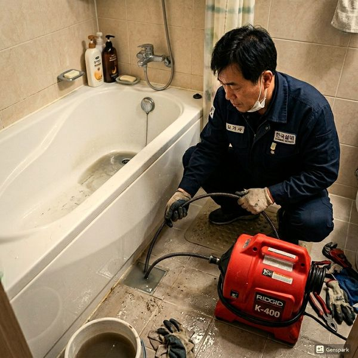
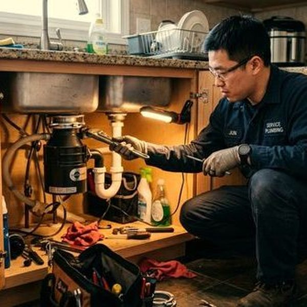
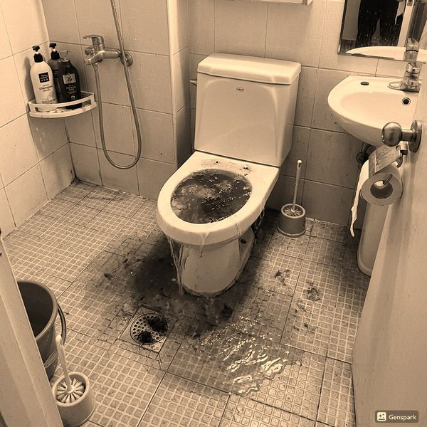

제우스시설관리 | 2025년 4월

오래된 빌라는 방수층이 벗겨지거나 갈라질 수 있습니다. 또한 에어컨 실외기, 태양광 패널 등의 설치로 방수층이 손상될 수 있습니다. 배수관 손상이나 막힘도 옥상의 물 고임을 유발하여 누수의 직접적인 원인이 됩니다.
✅ 우수관 - 빗물 배출, 일반적으로 넓은 지름
✅ 오수관 - 욕실/주방 오염수, 호기관 필수
✅ 배기 덕트 - 환기팬 배기, 외부 노출 금지
✅ 응축수 배관 - 에어컨 실외기 물배출
6개월마다 다음 항목을 점검하세요: 방수층 상태(갈라짐, 벗겨짐), 배수관 연결 상태, 드레인 구멍 막힘 여부, 에어컨 응축수 배관 상태, 파이핑 누수 흔적, 외부 낙엽/오염물 축적.
우레탄 방수는 5~7년, 아스팔트쉬트는 8~10년 주기로 점검 후 필요시 재시공합니다. 특히 방수층의 갈라짐이 보이면 즉시 전문가 점검이 필요합니다.
옥상의 빗물과 오염수가 하나의 배관으로 섞여 내려가면 배관 용량을 초과하기 쉽습니다. 분리 설계가 이상적이며, 부득이한 경우 충분한 지름의 배관을 사용해야 합니다.
5월 말~6월 초 장마 전에 필수적으로 점검하세요. 드레인 구멍 청소, 우수관 확인, 방수층 상태 점검으로 장마철 누수를 예방할 수 있습니다.
옥상 관리는 옥주의 책임입니다. 정기적인 점검과 선제적인 보수로 하부 층 주민들의 피해를 방지하고 건물 가치를 지킬 수 있습니다.

